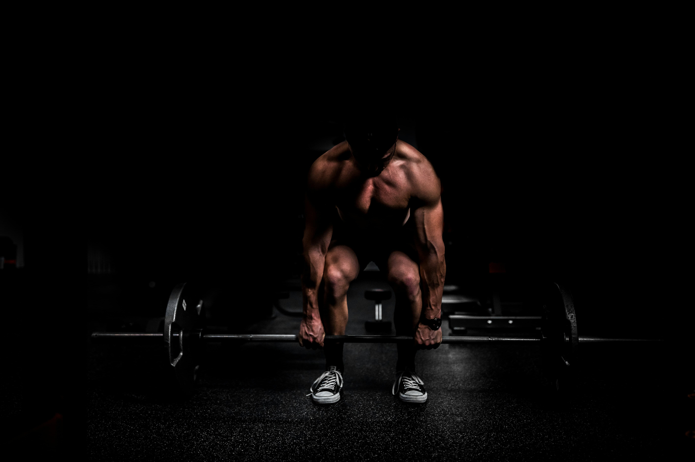
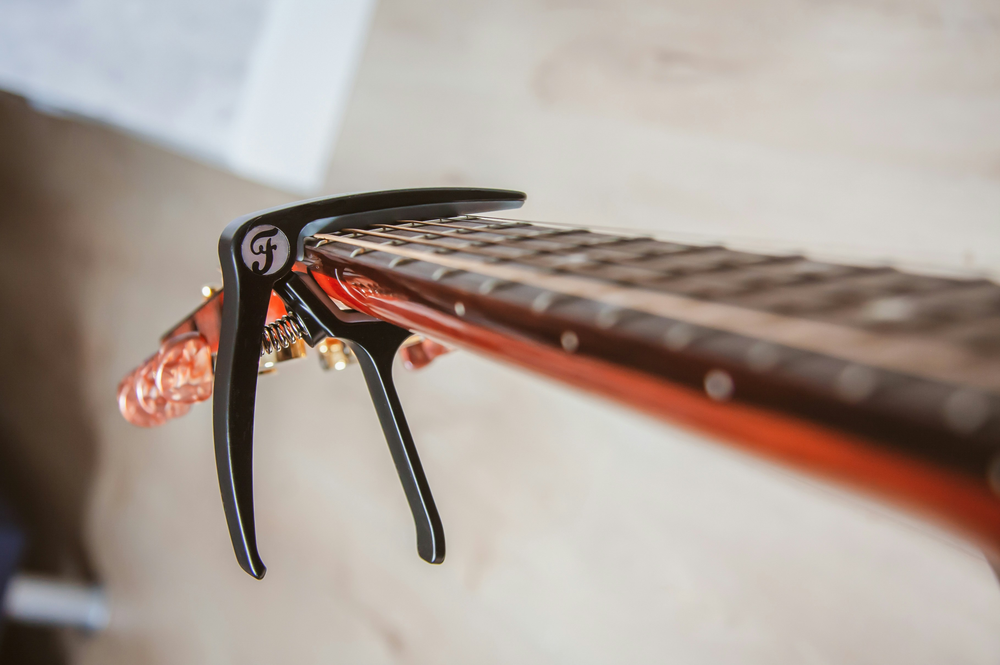
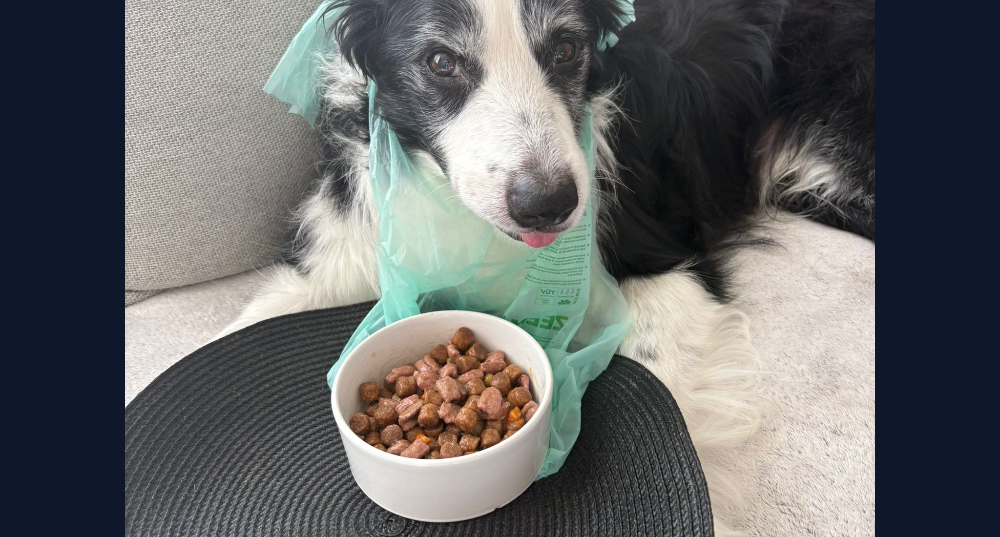

Beeldgalerij
Foto's

Fitness
Mijn dagelijkse routine om gefocust en energiek te blijven.
Gaming
Snel beslissingen nemen, strategie en communicatie met teamleden.

Gitaar spelen
Creativiteit, geduld en doorzettingsvermogen — net als bij programmeren.

Oscar 🐶
Mijn beste vriend — hij leert me elke dag iets over geduld en liefde.

Escaperooms
Patronen herkennen en samenwerken om tot de oplossing te geraken.

Muurklimmen
Kalm blijven wanneer het moeilijk wordt is een vaardigheid voor het leven.
Meer uitleg
Wat ik doe & waarom
Elk van mijn hobby's heeft me waardevolle vaardigheden bijgebracht die ik direct kan toepassen in mijn opleiding en toekomstige carrière in IT.
Fitness
Sporten leert me doelen stellen, vooruitgang opvolgen en mijn aanpak bijsturen — exact dezelfde mindset die ik gebruik bij het debuggen van code.
→ Discipline & doorzettingsvermogenGaming
Snel beslissingen nemen, strategisch nadenken en communiceren met teamleden — vaardigheden die in een professionele IT-omgeving minstens even belangrijk zijn.
→ Teamwork & strategieGitaar
Een nieuw stuk leren gaat niet in één dag — je oefent keer op keer. Dat principe past perfect bij programmeren: herhalen, fouten maken en bijsturen.
→ Creativiteit & geduldOscar 🐶
Oscar is bijna 15 jaar oud en verlamd in zijn achterpoten. Voor hem zorgen vereist geduld en verantwoordelijkheidszin — dat geeft je een ander perspectief. Bekijk Oscar hier!
→ Passie ❤️